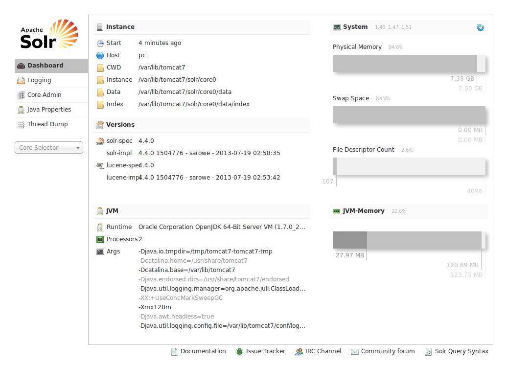
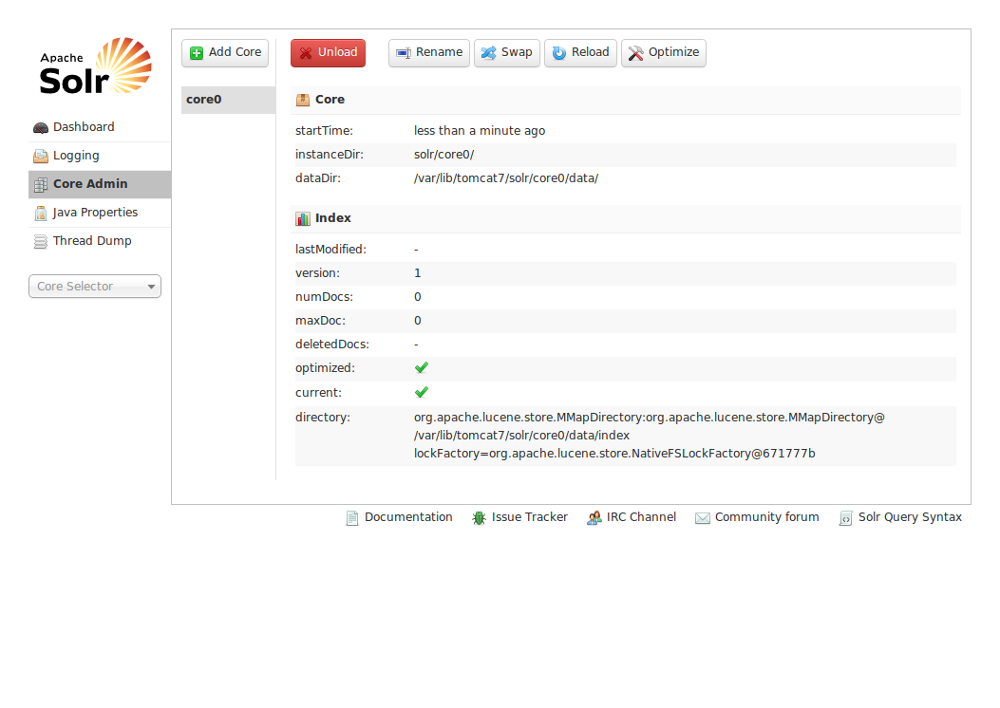
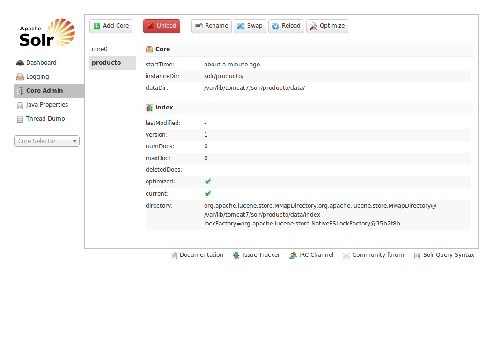

Instalar Solr 4.x y configurar multiples cores en Linux Ubuntu
Aclaraciones:
- El proceso de instalación de Solr es valido para cualquier otra versión de Solr.
- Un core es un hilo nuevo dentro de la misma instancia de Solr. Esto permite que se corra una sola instancia de Solr pero con varios buscadores.
Este tutorial asume que tienen instalado Java 7 y tomcat 7. Si tienen las versiones 6 le cambian el numero donde sea oportuno y funciona.
Vamos a ello:
Cuando tengas en tus manos el paquete se Solr, descomprimelo y ponte con la consola dentro de esa carpeta.
Cambia a sudo:
|
1 |
sudo su |
Curiosidad: Aunque en el paquete que descargamos de Apache Solr haya al rededor de 2950 archivos solo nos van a hacer falta al rededor de 10:
Lanzamos en consola lo siguiente:
|
1 2 3 4 5 6 7 |
cp dist/solr-*.war /var/lib/tomcat7/webapps/solr.war mkdir /var/lib/tomcat7/solr cp -R example/multicore/core0/ /var/lib/tomcat7/solr/core0 mkdir /var/lib/tomcat7/solr/core0/data chown -R tomcat7:tomcat7 /var/lib/tomcat7/solr mkdir /var/lib/tomcat7/lib cp dist/solrj-lib/* /var/lib/tomcat7/lib |
Ahora edita /var/lib/tomcat7/solr/solr.xml, pega lo siguiente y guárdalo.
|
1 2 3 4 5 6 7 8 9 10 11 |
<?xml version="1.0" encoding="UTF-8" ?> <solr persistent="true" sharedLib="lib"> <cores adminPath="/admin/cores"> <core name="core0" instanceDir="core0"> <property name="dataDir" value="/var/lib/tomcat7/solr/core0/data"></property> </core> </cores> </solr> |
Edita /etc/tomcat7/Catalina/localhost/solr.xml, pega lo siguiente y guárdalo.
|
1 2 3 4 5 |
<?xml version="1.0" encoding="UTF-8" ?> <context docBase="/var/lib/tomcat7/webapps/solr.war" debug="0" privileged="true" allowLinking="true" crossContext="true"> <environment name="solr/home" type="java.lang.String" value="/var/lib/tomcat7/solr" override="true"></environment> </context> |
Listo, reiniciemos tomcat para ver en funcionamiento el core que hemos creado:
|
1 |
service tomcat7 restart |
Entramos en http://localhost:8080/solr/ y lo vamos a ver.


Añadir mas cores
Bueno ya tenemos un Solr con un core, pero tiene poco sentido montar un Solr de multicores que tenga un solo core, así que vamos a crear uno mas.
Para este nuevo core (y todos los que quieras crear) hay que hacer dos cosas:
1: copiar la carpeta core0 junto a su owner para ahorrarnos de andar creando la misma estructura:
|
1 |
cp -Rp /var/lib/tomcat7/solr/core0 /var/lib/tomcat7/solr/producto |
NOTA: No olvides editar /var/lib/tomcat7/solr/producto/conf/schema.xml y /var/lib/tomcat7/solr/producto/conf/solrconfig.xml para ajustar sus parámetros.
2: actualizar /var/lib/tomcat7/solr/solr.xml agregandole un nuevo tag con lo siguiente:
|
1 2 3 |
<core name="producto" instanceDir="producto"> <property name="dataDir" value="/var/lib/tomcat7/solr/producto/data"></property> </core> |
Reinicia tomcat y ya tenes otro core.

Suerte y saludos.


Gracias por tu aporte. Simple y funcional.
Pingback: Capy | Instalar Solr 5.x